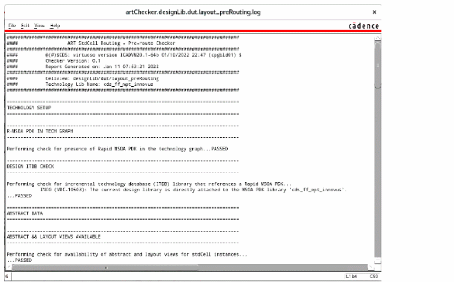
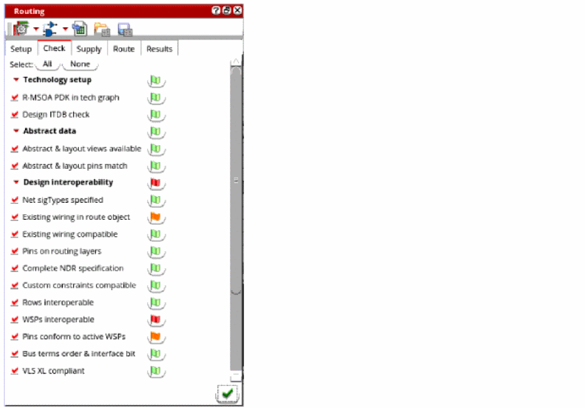

Checking Layout Routability after Running Standard Cell Placer
You can run pre-routing checks to detect design issues before routing a design. Running the checks lets you identify potential violations or issues that you might run into while routing the design or objects that might cause trouble for the router later in the flow. You can fix these issues before running the router.
To check the routability of a design:
- Open a design in Layout MXL.
-
Choose Window – Assistants – Routing.
Alternatively, right-click anywhere on the layout window menu bar and choose Assistants – Routing. -
In the Routing assistant, click the Check tab.
- Click All to select all pre-routing checks or select one or more checks by clicking the check box next to each check.
-
In the Output section, specify the routing checks log settings.
- Select Display log to specify whether the routing log must be displayed.
-
Click the Display existing log file button next to the Display log option to view the log file.You can use this log file to check for any issues after the pre-route checks are run. Log file provides additional information with clickable links to show the issue in the layout. You can also view the issues in the Annotation Browser using the Markers option.
- Select Overwrite log to overwrite the existing routing log. When this option is not selected, a new log file is created.
- Select Markers to specify whether the markers must be displayed in the Annotation Browser.
-
Click the Show Annotation Browser button next to the Markers option to view the issues reported for the pre-route checks. The issues are displayed in the Misc tab of the Annotation Browser.
-
Click Run pre-route checks
 .
.
Once the checks are run, the status flags appear in green, orange, and red. A green flag indicates that the check was passed, orange indicates a warning, and red indicates an error. Ensure that no red flags appear. This means that the design is correctly setup.
Clicking the flag button takes you to the location in the log file where that check result was reported.
Related Topics
Configuring Standard Cell Router Settings
Generating Width Spacing Patterns for Standard Cell Routing
Running Signal Routing for Standard Cells
Viewing and Analyzing Standard Cell Routing Results
Routing Assistant User Interface for Standard Cell
Return to top